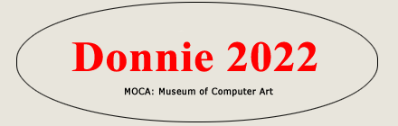

moca home directors choice view all entries catalog 2022

DONNIE 2022 WINNERS
First Prize
Vincenzo Corrado
Radio Source 1Second Prize
Andrew Cole
GM Study V1 - The TombThird Prize
Randy Morris
Swamp Pine
Honorable Mention #1
Bjoern Daempfling
LohengrinHonorable Mention #2
Michele Farkas
Frattale PrimaverileHonorable Mention #3
Saritha Margon
Image 0Honorable Mention #4
Nicholas McCumber
Right Around 1hHonorable Mention #5
Vincenzo Corrado
Radio Source 2
Contest Judge
Don Archer
MOCA director